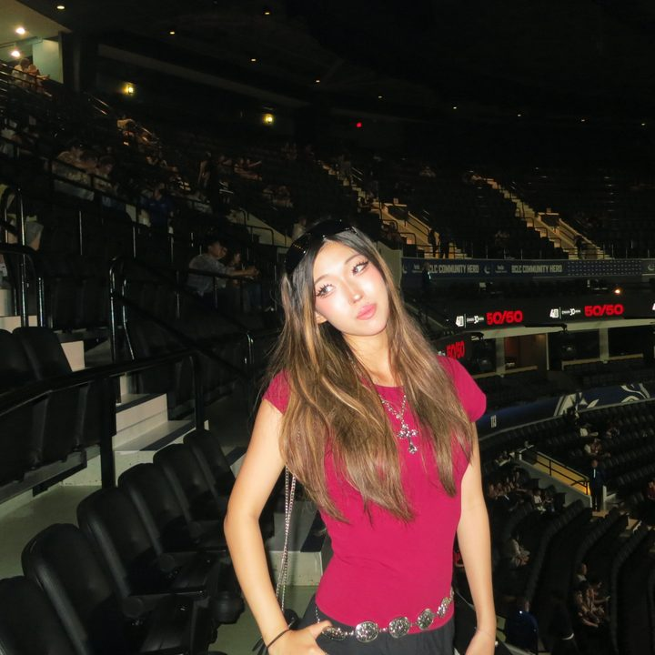
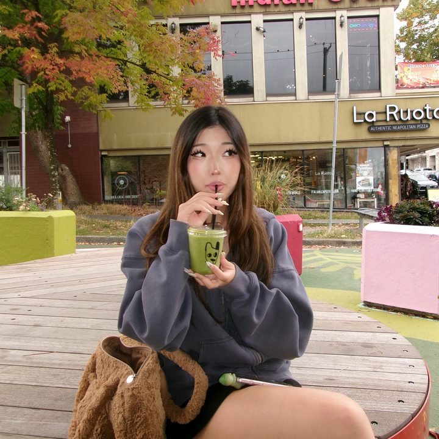

a little about me
I'm studying computer science at the University of British Columbia in Vancouver, class of 2029. I learn best by building things I'd actually use. Most of my projects started as "why isn't there a nice app for this?" and turned into one.
- Placed 3rd overall at the UBC Amazon Robotics Hackathon.
- Provincial junior badminton champion. I also coached camps of 25+ kids at Shuttlesport Badminton Academy.
- Led my high school physics club and coached our team at the UBC Physics Olympics.
- Coursework so far: data structures & algorithms, computer systems, software construction, discrete math, linear algebra.
- Collector of Smiskis that hide in corners.

